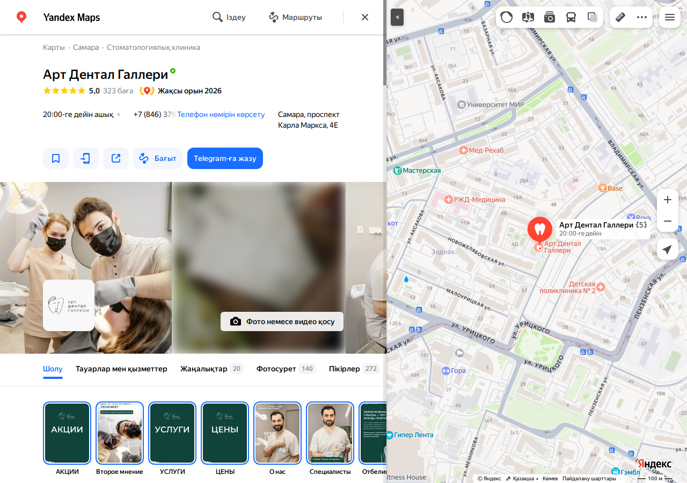
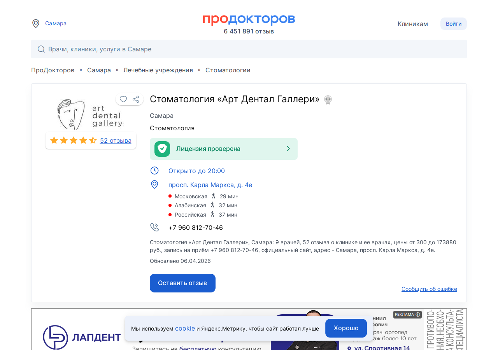
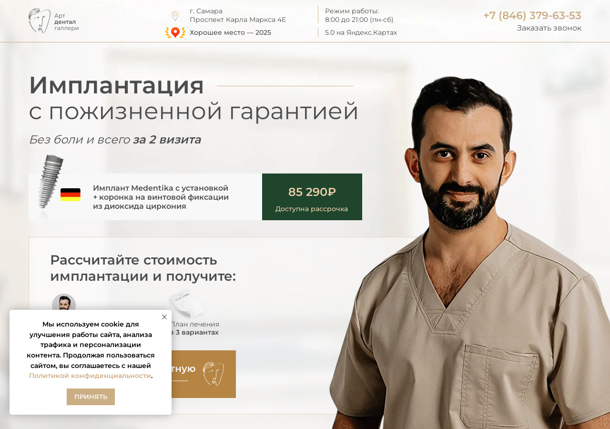
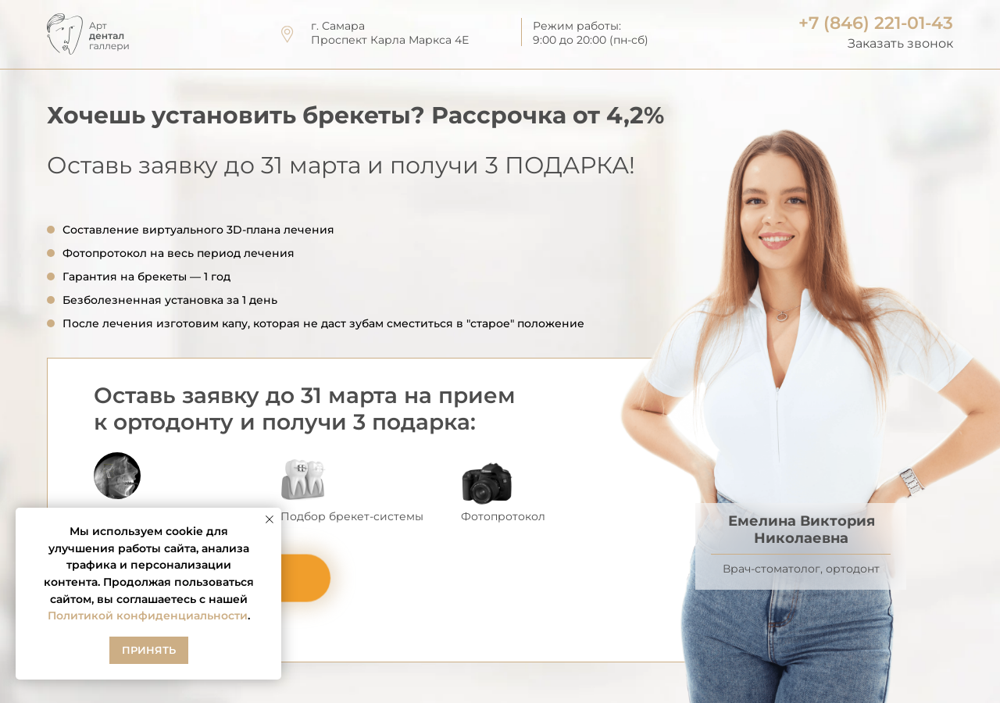

Экспресс-аудит · подготовлено к встрече
Я прошёл по 20 с лишним площадкам: карты, медпорталы, агрегаторы, рейтинги, соцсети, сам сайт. Посмотрел отзывы, телефоны, карточки врачей, динамику за 2026 год. Сделал это до встречи, чтобы говорить по делу, а не «расскажите о себе».
Подготовлено для Тогрула Сеидова · к встрече в понедельник, 8 июня, 15:00Сначала о сильном
По главным картам и работе с отзывами клиника выглядит лучше большинства в городе. На этом и строится дальнейший рост, поэтому начну с него.
Карта присутствия
Каждую строку можно открыть и проверить.
| Площадка | Статус | Что там |
|---|---|---|
| Яндекс Карты | сильно | 5,0 · 272 отзыва · свежие · полная карточка |
| 2ГИС | сильно | 5,0 · ~200 отзывов · подтверждена |
| ВКонтакте | сильно | сообщество, видео-подкасты, посты до июня 2026 |
| ПроДокторов | норма | врач 4,8 · клиника 4,3 · нет онлайн-записи, 2 фото |
| rting.ru | норма | 4,9 · 99 оценок · карточка не управляется |
| 32top.ru | точка роста | есть в каталоге (4,9), но не в кураторском топ-15 |
| Zoon | точка роста | две карточки-дубля, обе ~2,8, без управления |
| Google Карты | точка роста | карточки в выдаче нет |
| СберЗдоровье, НаПоправку | точка роста | карточек нет, каналы записи не задействованы |
| Дзен, Instagram | точка роста | каналов нет, контент только во ВКонтакте |
Карты и отзывы работают. Провисает другое: каналы записи, единый сайт и аналитика. Дальше по порядку.
Отзывы
Отзывы дают около 30% веса карточки в выдаче карт. Здесь у вас порядок: и на Яндексе, и на 2ГИС отзывы приходят постоянно, и вы быстро отвечаете.

Врачи на ПроДокторов
| Врач | Профиль | Рейтинг | Отзывов | Видеовизитка |
|---|---|---|---|---|
| Сеидов Т. А. (главврач) | имплантолог, ортопед, хирург | 4,8 | 17 | есть |
| Яруллин Б. И. | ортопед | 5,0 | 27 | есть |
| Махмутов Р. С. | терапевт, эндодонт | 5,0 | 19 | нет |
| Зейналов Ф. Э. | терапевт, хирург | 5,0 | 16 | есть |
| Нугаева А. Ф. | ортодонт | 3,1 | 2 | есть |
В карточке клиники значатся 9 врачей. У ещё четверых полных карточек на ПроДокторов я не нашёл, поэтому не привожу. Лучше уточнить у вас. Рейтинг 3,1 у ортодонта это особенность площадки при двух отзывах. Не оценка работы.
Два момента по записи. Первое: онлайн-записи нет ни у одного врача, только «уточняйте по телефону». Второе: первичный приём платный, 3 000 ₽ у вас, 2 000 ₽ у врача, 1 000 ₽ детский. На лендинге при этом обещана «бесплатная консультация ортодонта». Оба момента про вход пациента в клинику. Обсудим на встрече.

Телефоны
Вот какие номера засветились и где. Не спешу с выводом, что учёта нет. Разные номера по каналам это и есть коллтрекинг, когда видно, с какого канала пришёл звонок. Вопрос в другом: сведены ли они в одну систему, видите ли вы по ним, какой канал приводит пациента. На встрече посмотрим.
Сайт и лендинги
Отдельные лендинги под имплантацию и ортодонтию это нормальная рабочая стратегия под рекламу. Вопросов нет. Вопрос в другом: данные на них спорят друг с другом и устарели. Пациент это видит, и доверие падает. Конкретно, с цитатами и ссылками.
Часы работы спорят внутри одного лендинга
Рейтинг разный на каждой странице, и оба не сходятся с реальным
Два разных телефона на одной странице
Вечная акция и замороженные цифры
Черновик попал в продакшен и проиндексирован


Нужен один сайт с актуальными ценами, рейтингом и единым номером. Лендинги под рекламу оставляем, но синхронизируем с ним.
Точки роста
Карточки в выдаче нет. Часть пациентов ищет через Google и iPhone, и для них клиники на их карте не видно.
Что даёт: бесплатный канал и аудитория, которую сейчас не видно. Завести и заполнить как Яндекс.
Карточек нет. Это медпорталы с онлайн-записью, которые пациент проверяет перед выбором клиники.
Что даёт: ещё два канала записи и сбора отзывов.
Сейчас «уточняйте по телефону» у всех врачей. Запись не подключена.
Что даёт: подъём карточки в выдаче портала и пациенты, которые не любят звонить.
Две карточки-дубля, обе около 2,8, ни одна не заявлена владельцем.
Что даёт: убрать задвоение, заявить права, поднять рейтинг сбором отзывов.
Клиника есть в общем каталоге 32top (4,9), но не в кураторском топе города, где стоят конкуренты.
Что даёт: попасть в топ городского рейтинга, где сравнивают клиники.
Главный вывод
Карты, отзывы, врачи, ВКонтакте работают. Но за витриной всё живёт по отдельности. Семь номеров по площадкам. Часы, цены и рейтинг расходятся между сайтом и карточками. Отзывы при этом идут хорошо, и на Яндексе, и на 2ГИС. Главный вопрос к встрече простой: видите ли вы по цифрам, какой канал приводит пациента и сколько он стоит. Если да, добавляем бюджет точечно. Если картина рассыпана, сначала собираем её, и загрузка растёт на тех же деньгах.
К встрече
На всё навскидку отвечать не нужно. Что знаете по памяти, остальное обсудим на звонке. Это уже взгляд внутрь, на то, что снаружи не видно.
На встрече посмотрим изнутри: финансы, конверсию первичных в план лечения, загрузку кресел. Там обычно и лежат основные деньги.
Zoom · понедельник, 8 июня, 15:00